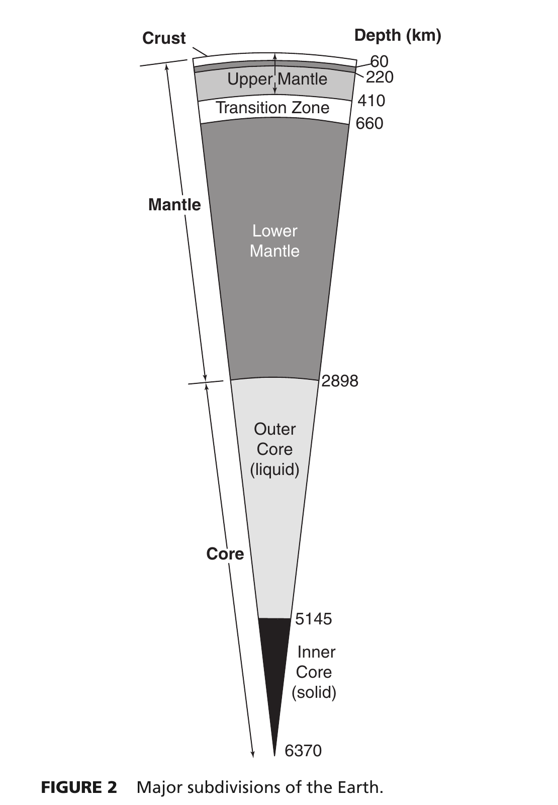

Correct Option: (b) 2, 3 and 4 only — Statement 1 is factually incorrect because the core-mantle boundary (Gutenberg discontinuity) lies at a depth of ~2890 km (2898 km PREM), not 3100 km. Statements 2, 3, and 4 are foundational, historically and physically accurate principles of global seismology.

The Earth's mantle extends from the base of the crust (Moho discontinuity, averaging ~30–35 km beneath continents and ~7 km beneath oceans) down to the Core-Mantle Boundary (CMB), historically known as the Gutenberg discontinuity.
Extensive seismic refraction, reflection, and normal-mode studies—crystallized in the Preliminary Reference Earth Model (PREM) of Dziewonski & Anderson (1981)—demonstrate unequivocally that the CMB is situated at a depth of 2890 km (2898 km in PREM). A depth of 3100 km is factually incorrect by over 200 km.
Prior to 1936, the Earth's core was believed to be an entirely molten iron sphere. In 1936, Danish pioneering seismologist Inge Lehmann published her landmark paper titled "P'" (P-prime). She analyzed faint P-wave arrivals recorded in the European and New Zealand shadow zone ($103^\circ < \Delta < 143^\circ$) from an earthquake near Buller, New Zealand (1929).
She proved that these arrivals were waves reflected ($PKiKP$) and refracted ($PKIKP$) by a distinct, higher-velocity inner core boundary situated at a depth of ~5150 km (5145 km). Harold Jeffreys and Keith Bullen subsequently confirmed that the high compressional velocity and shear wave transmission require the inner core to be solid.
In 1909, Croatian seismologist and meteorologist Andrija Mohorovičić analyzed seismograms from the Pokuplje (Kulpa Valley) earthquake near Zagreb. He noticed two distinct sets of P-wave and S-wave arrivals at epicentral distances greater than ~200 km: a slower direct wave propagating through the upper crust ($P_g, S_g$) and a faster wave that arrived earlier at distant stations ($P_n, S_n$).
He correctly deduced that the earlier arrivals traveled along a deeper, higher-velocity layer. The velocity of compressional waves jumped abruptly from ~6.0–6.8 km/s in the crust to >8.0 km/s in the upper mantle. This primary boundary is named the Mohorovičić discontinuity (Moho).
Seismic body waves consist of two fundamental types:
Fluids (liquids and gases) lack shear strength and cannot sustain elastic shear stress; therefore, their shear modulus is zero ($\mu = 0$). As a mathematical and physical consequence, $V_s = 0$. In 1906, Richard Dixon Oldham and later Beno Gutenberg (1914) documented that $S$-waves do not transmit across the outer core, generating a massive shadow zone for direct $S$-waves extending beyond an epicentral distance of $103^\circ$. This proves conclusively that the outer core is in a fluid/liquid state.
| Discontinuity Name | Depth (km) | Discoverer & Year | Physical & Compositional Transition |
|---|---|---|---|
| Conrad Discontinuity | 15–20 km (discontinuous) | Victor Conrad (1925) | Upper crust (felsic/granitic) to lower crust (mafic/basaltic). |
| Mohorovičić (Moho) | ~30–35 km (continents) ~7–10 km (oceans) |
Andrija Mohorovičić (1909) | Crust (felsic/mafic) to Upper Mantle (peridotitic; $V_p$ jumps from ~6.8 to >8.0 km/s). |
| Repetti Discontinuity | ~660–700 km | William Repetti (1930) | Upper Mantle transition zone to Lower Mantle (ringwoodite $\rightarrow$ bridgmanite + ferropericlase). |
| Gutenberg Discontinuity (CMB) | 2890–2898 km | Beno Gutenberg (1914) | Lower Mantle (solid silicate) to Outer Core (molten liquid Fe-Ni; $V_s \rightarrow 0$). |
| Lehmann Discontinuity (ICB) | 5145–5150 km | Inge Lehmann (1936) | Liquid Outer Core to Solid Inner Core ($V_p$ jumps from ~10.3 to 11.2 km/s, $S$-waves reappear). |